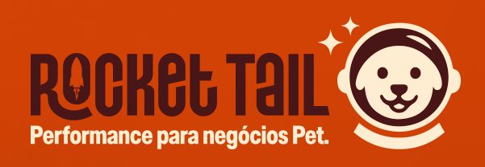

Performance para negócios Pet.
Tenha acesso ao diagnóstico e ao plano de ação que vão destravar seu negócio pet e te colocar na rota de mais agendamentos, mais faturamento e mais previsibilidade.
Sim: é possível vender de 2x a 4x mais em 90 dias se você tiver a direção certa, o posicionamento correto e a comunicação que atrai o tutor certo.
- Chega de depender de indicação.
- Chega de conteúdo que não serve pra nada.
- Chega de esperar a agenda “encher sozinha”.